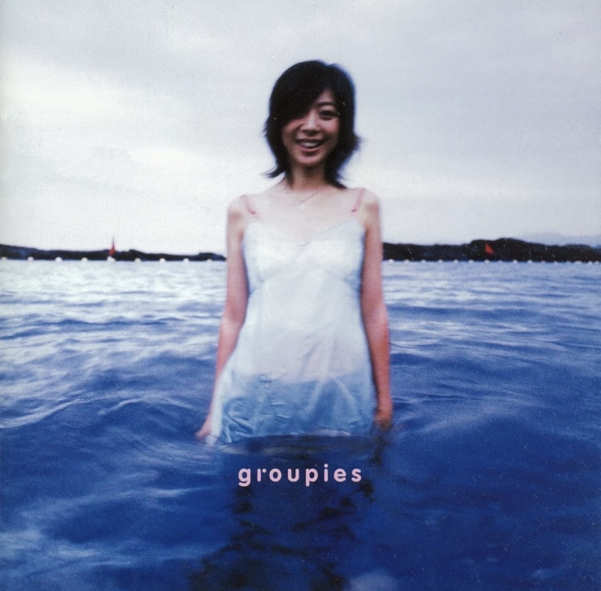

10月22日 星期四
02:34
💬
🐑
现在
내 珍珍韩振 지금 뭐해
向上滑动以解锁
向上轻扫使用面容 ID 或输入密码
1ABC
2DEF
3GHI
4JKL
5MNO
6PQR
7STU
8VWX
9YZ
0
取消
备忘录
1

Threads
3

X
5

Spotify

KakaoTalk
4

Gmail
2

Instagram
地图
时钟
设置
电话
信息
照片
Safari

珍藏歌单
Hanjin · 6 首歌曲
备忘录
✕
备忘录
⌕ 搜索备忘录
📌 置顶
备忘录
KakaoTalk
✕
Threads
✕
Threads 广场
 hanjin
hanjinstarlight_05
15分钟前
THE VISUALS IN THIS COMEBACK?? 真的会谢，帅得我直接连夜从床上爬起来磕头 🔥😭 #Kpop #Comeback
这次回归的视觉？？真的会谢，帅得我直接连夜从床上爬起来磕头 🔥😭
这次回归的视觉？？真的会谢，帅得我直接连夜从床上爬起来磕头 🔥😭
❤️ 128 · 💬 32回复
yonsei_surviving
45分钟前
期末周的精神状态：跟路边的鸽子对视了三分钟，觉得它比我更有学术规划 🤡🕊️ #期末周 #大学生日常
❤️ 256 · 💬 45回复
k_drama_addict
1小时前
kswl救命！！编剧你是懂怎么拿捏我们这种纯爱战神的，民政局我搬来了请原地结婚好吗 💍✨ #韩剧 #纯爱
❤️ 89 · 💬 19回复
minji_archive
2小时前
why is monday already here 😭 I need 3 more days of weekend
为什么周一已经到了 😭 我还需要三天周末
为什么周一已经到了 😭 我还需要三天周末
❤️ 48 · 💬 12回复
fandom_queen
3小时前
家人们谁懂啊，今天绝了，生图直出这个狙击心脏的眼神是真实存在的吗... 妈妈我恋爱了 💘🔥 #饭圈日常
❤️ 312 · 💬 67回复
study_harder
5小时前
小组作业最恶心的不是遇到猪队友，而是大家都是猪队友，最后只能由我一个人扛下所有 🫠🔪 #大学生活 #破防了
❤️ 194 · 💬 53回复
𝕏 广场
✕
实时趋势与动态
 @hanjin
@hanjin@streaming_bot · 10分钟前
STREAM HARDER GUYS we are so close to #1!! 🚨🔥
大家快去刷歌！！我们离一位只有一步之遥了！！🚨🔥
大家快去刷歌！！我们离一位只有一步之遥了！！🚨🔥
@yonsei_rant · 30分钟前
신촌 상권 물가 진짜 양아치 아니냐... 밥 먹기 무섭다 ㅠㅠ
新村这边的物价真的抢劫呢... 吃不起饭了 ㅠㅠ
新村这边的物价真的抢劫呢... 吃不起饭了 ㅠㅠ
@tokyo_fangirl · 1小时前
ビジュアルがマジで人間じゃない、尊すぎる…しんどい 😇✨
这颜值简直不是人类，太尊贵了…人没了好吗 😇✨
这颜值简直不是人类，太尊贵了…人没了好吗 😇✨
@yonsei_student_bot · 2小时前
why am i awake at 3am AGAIN 😭
为什么我又凌晨三点还没睡 😭
为什么我又凌晨三点还没睡 😭
@idols_out_of_context · 4小时前
not him tripping over nothing during the encore 💀 bro has negative balance
笑死，安可环节平地摔可还行 💀 哥们儿是一点平衡感都没有
笑死，安可环节平地摔可还行 💀 哥们儿是一点平衡感都没有
@campus_vibe · 5小时前
신촌 연대 앞 카페 아메리카노 맛집 추천 받습니다 ☕️
求推荐新村延大门前好喝的美式咖啡馆 ☕️
求推荐新村延大门前好喝的美式咖啡馆 ☕️
Instagram
✕
suji_98
campus_life
 hanjin
hanjinseoul_cafe_hopper
☕ [咖啡馆角落光影照片]
seoul_cafe_hopper a little reset ☁️ (周末的咖啡馆时光)
照片
✕
图库


共预留 27 张新照片位置。请将 hanjin_album_01.jpg 至 hanjin_album_27.jpg 上传到 index.html 同一目录。点击任意照片可查看大图。
地图
✕
时钟
闹钟世界时钟秒表计时器
闹钟
睡眠｜起床闹钟健康
09:30
起床 · 每天
起床闹钟已开启
其他闹钟仅起床闹钟开启
07:30
闹钟
07:35
闹钟
07:40
闹钟
13:50
闹钟
18:00
闹钟
22:30
闹钟
闹钟开关可在模拟器内切换。此页面仅模拟时钟界面，不会在网页关闭后触发系统级闹钟通知。
Gmail
✕
收件箱 (8)
延世大学教务处 / 교수님오늘 (Today)
[공지] 한국 근현대사 소그룹 미디어 과제 제출 마감 안내
【通知】《近现代史纲要》小组微视频截止提醒 / [Notice] Deadline Reminder
【通知】《近现代史纲要》小组微视频截止提醒 / [Notice] Deadline Reminder
KR: 이번 학기 '한국 근현대사' 미디어 과제 제출이 다가왔습니다. 이번 주 금요일 밤 23:59까지 제출해 주세요.
CN: 本学期《近现代史纲要》微视频作业提交临近，请于本周五晚23:59前完成提交。
EN: Submission deadline for the Modern Korean History video project is this Friday at 23:59.
연세대학교 학사지원시스템2일 전 (2 days ago)
수강 신청 성공 확인 및 지난 학기 성적표 안내
【通知】选课成功确认信及上学期成绩单
【通知】选课成功确认信及上学期成绩单
KR: 교양 필수 과목 수강 신청이 완료되었습니다. 또한 직전 학기 최종 성적표가 발급되었습니다.
CN: 通识核心课程选课已成功确认，同时上一学期期末成绩单已生成可查。
EN: General education course registration confirmed. Your previous semester GPA report is now available.
총학생회 채용담당3일 전 (3 days ago)
[합격 통지] 연세대학교 총학생회 간부 최종 합격
【录用通知】正式成为校学生会干事
【录用通知】正式成为校学生会干事
KR: 2차 면접 평가 결과, 총학생회 정식 간부로 합격하셨음을 축하드립니다. 목요일 오후 회의에 참석해 주세요.
CN: 经过两轮面试评估，恭喜您正式被录用为学生会干事，周四下午将召开首次部门例会。
EN: Congratulations on passing the interviews and joining the Student Union. First meeting on Thursday afternoon.
KORAIL (한국철도공사)5일 전 (5 days ago)
[승차권 확인] KTX 열차표 예매 완료 (05호차 13A)
[车票确认] KTX 高铁票预订成功 (05车厢 13A)
[车票确认] KTX 高铁票预订成功 (05车厢 13A)
KR: KTX 승차권 예매가 완료되었습니다. 좌석번호: 05호차 13A. 신분증을 지참하고 탑승해 주세요.
CN: KTX高铁车票已出票成功，座位号：05车厢 13A，请携带有效证件按时进站。
EN: KTX ticket booking confirmed. Seat: Car 05, 13A. Please bring your ID for boarding.
Airbnb / Agoda1주일 전 (1 week ago)
부산 해운대 오션뷰 숙소 예약 확정 안내
釜山海景民宿预订成功确认函 / Busan Stay Confirmed
釜山海景民宿预订成功确认函 / Busan Stay Confirmed
KR: 바다 전망 민박 예약이 완료되었습니다. 이번 주 금요일 오후 15시에 셀프 체크인 가능합니다.
CN:海景民宿已预订成功，本周五下午 15:00 即可办理自助入住。
EN: Busan weekend getaway accommodation booking confirmed. Check-in this Friday at 15:00.
신촌 모퉁이 카페1주일 전 (1 week ago)
[멤버십] 가을 신상 바닐라 라떼 시음 쿠폰이 도착했어요!
【会员通知】秋季新品香草拿铁尝鲜优惠券
【会员通知】秋季新品香草拿铁尝鲜优惠券
KR: 단골 손님을 위한 이번 주 가을 한정 바닐라 라떼 무료 시음 쿠폰이 계정에 적립되었습니다.
CN: 老顾客专属福利，您本周的秋季限定香草拿铁尝鲜券已存入账户，欢迎常来。
EN: Your membership coupon for the new autumn vanilla latte has been credited to your account.
대학 행정실 (Administration)2주일 전 (2 weeks ago)
장학금 선정 결과 공고 및 TA(조교) 업무 일정표 안내
【公示】奖学金申请结果及助教(TA)工作安排
【公示】奖学金申请结果及助教(TA)工作安排
KR: 이번 학기 국가 및 교내 장학금 선정 결과가 공고되었습니다. 첨부된 교수님 연구실 조교(TA) 업무 일정을 확인하세요.
CN: 本学期奖学金申请结果已正式公示，附件中包含教授实验室助教(TA)的日常值班安排表。
EN: Scholarship selection results announced. Please check the attached TA work schedule from the professor.
연세대학교 중앙도서관3주일 전 (3 weeks ago)
[도서 반납 안내] 대출하신 도서 만기 3일 전입니다
【图书馆提醒】《艺术与设计史》即将到期
【图书馆提醒】《艺术与设计史》即将到期
KR: 대출 중인 '예술과 디자인의 역사' 도서 반납 기한이 3일 남았습니다. 홈페이지에서 연장 가능합니다.
CN: 读者您好，您借阅的《艺术与设计史》还有3天到期，请及时归还或在官网办理续借。
EN: Reminder: The borrowed book 'History of Art & Design' is due in 3 days. Online renewal is available.
韩国首尔 (Seoul)
18°
多云
最高 21° 最低 12°
空气质量 AQI · 正在读取
天气状况 · 气温 (°C)
现在
☁️
18°
13时
🌤️
19°
14时
☀️
21°
15时
☀️
20°
16时
⛅
18°
17时
🌙
16°
近期天气趋势
今天☁️12°
21°
周五☀️14°
23°
周六🌤️13°
22°
⌂
Apple 天气
☰
设置
H
HanjinApple 账户、iCloud 等
›⌕ 搜索
飞行模式
无线局域网已连接
›蓝牙打开
›蜂窝网络
›个人热点
›通知
›声音与触感
›专注模式
›显示与亮度
›墙纸
›通用
›辅助功能
›隐私与安全性
›此处是网页内的设置界面仿制版，开关用于视觉模拟，不会修改你真实 iPhone 的系统设置。
Safari
起始页
🔍搜索或输入网站名称🎙
Safari
信息
✎
信息
日历
日
一
二
三
四
五
六
10月22日
通话